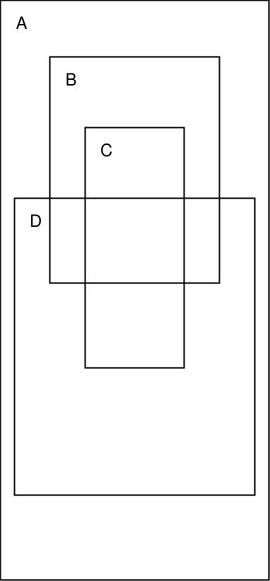
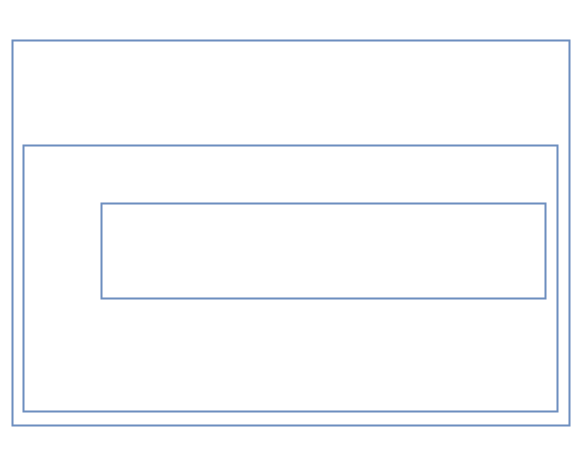

1
Aspectos teóricos de la programación estructurada
1.1
Programación estructurada
La programación estructurada es un paradigma de
programación imperativa que se apoya en tres pilares
fundamentales:
Estructuras básicas: los programas se escriben
usando sólo unos pocos componentes constructivos básicos que se combinan
entre sí mediante composición.
Recursos abstractos: los programas se escriben
sin tener en cuenta inicialmente el ordenador que lo va a ejecutar ni
las instrucciones de las que dispone el lenguaje de programación que se
va a utilizar.
Diseño descendente por refinamiento sucesivo:
los programas se escriben de arriba abajo a través de una serie de
niveles de abstracción de menor a mayor complejidad, pudiéndose
verificar la corrección del programa en cada nivel.
Su objetivo es conseguir programas
fiables y fácilmente mantenibles.
Su estudio puede dividirse en dos partes bien diferenciadas:
Por una parte, el estudio conceptual se centra
en ver qué se entiende por «programa estructurado» para estudiar con
detalle sus características fundamentales.
Por otra parte, dentro del enfoque práctico se
presentará una metodología que permite construir programas estructurados
paso a paso, detallando cada vez más las instrucciones que lo
componen.
Las ideas que dieron lugar a la programación estructurada ya
fueron expuestas por E. W. Dijkstra en 1965, aunque el
fundamento teórico está basado en los trabajos de Böhm y
Jacopini publicados en 1966.
Posteriormente, Dijkstra se basó en los trabajos previos de Hoare
y Floyd para establecer una metodología disciplinada y sistemática de
programación en la cual los programas se escriben al mismo tiempo que se
va demostrando su corrección, en un estilo formal y riguroso,
aprovechando que los programas estructurados son más fácilmente
verificables por su composicionalidad.
La programación estructurada surge como respuesta a los problemas
que aparecen cuando se programa sin una disciplina y unos límites que
marquen la creación de programas claros y correctos.
Un programador disciplinado crearía programas fáciles de
leer en los que resulta relativamente fácil demostrar su
corrección.
Por ejemplo, el siguiente programa que calcula el producto de dos
números resulta sencillo de entender:
En cambio, un programador indisciplinado crearía
programas más difíciles de leer y, por tanto, de demostrar que son
correctos.
Este programa es mucho más complicado de seguir debido a que
tiene saltos continuos y líneas que se cruzan.
Debido a ello, resulta mucho más difícil saber qué hace el
programa y, por tanto, qué problema resuelve y, más importante, si lo
resuelve correctamente.
¿Qué hace este programa?
Este programa es un ejemplo del llamado código
espagueti.
El código espagueti es un término coloquial que se usa al
describir los programas que tienen un flujo de control complicado e
incomprensible, sobre todo debido al uso indiscriminado de
sentencias de salto o
GOTO.
Su nombre proviene del hecho de que este tipo de código se parece
a un plato de espaguetis, o sea, un montón de hilos intrincados y
anudados.
Un código así se tarda más en comprenderse que en
reescribirse.
Además, en un programa así resulta muy complicado añadir una
nueva funcionalidad sin romper otra, ya que todos los elementos que lo
forman están fuertemente interrelacionados y cualquier parte del
programa puede afectar a cualquier otra de maneras
imprevisibles.
Eso es debido a que falta una coherencia, una estructura interna
en el programa, porque el código se ha escrito de cualquier manera, sin
disciplina ni restricciones, sin que el programador se haya parado a
pensar si debería hacer lo que está haciendo como lo está
haciendo.
Si un programa se escribe de cualquier manera, aunque funcione
correctamente, puede resultar engorroso, críptico, ilegible, casi
imposible de modificar y de comprobar su corrección.
Por tanto, lo que hay que hacer es impedir que el
programador pueda escribir programas de cualquier manera, y
para ello hay que restringir sus opciones a la hora de
construir programas, de forma que el programa resultante sea fácil de
leer, entender, mantener y verificar.
Ese programa, una vez terminado, debe estar construido combinando
sólo unos pocos tipos de componentes y cumpliendo una serie de
restricciones.
El concepto de composicionalidad es
clave en programación estructurada: los programas se componen
de partes, las cuales se componen a su vez de otras partes, y así
sucesivamente hasta llegar a partes compuestas únicamente de
instrucciones elementales.
La idea es que podemos comprobar la corrección de un programa (o
de una de sus partes) a partir de la corrección de cada una de las
partes de lo componen).
Cuando leemos un texto, no lo hacemos letra a letra, sino por
bloques: leemos palabras completas de un solo vistazo, incluso
varias palabras juntas cuando esa combinación de palabras se da con
frecuencia.
Igualmente, queremos programas que no necesiten ser leídos
instrucción por instrucción, sino que podamos descomponerlos en
bloques con significado propio que puedan ser leídos y
entendidos por sí mismos como una sola cosa: unidades de código que se
puedan leer y entender como cuando leemos palabras completas de un solo
vistazo.
Con la programación estructurada, queremos poder componer
sentencias complejas a partir de otras sentencias más simples, de la
misma manera que podemos componer expresiones complejas a partir de
otras más simples.
Eso implica, entre otras cosas, que debemos evitar el uso de
sentencias GOTO para evitar el código
espagueti.
1.2
Programa restringido
Un programa restringido es aquel que se
construye combinando únicamente los tres siguientes componentes
constructivos:
Sentencia, que sirve para representar una
instrucción imperativa básica, principalmente lectura,
escritura o asignación. A éstas tres se las denominan
acciones primitivas.
Condición, que sirve para bifurcar el flujo de
control del programa por un camino u otro dependiendo del valor de una
expresión lógica.
Agrupamiento, que sirve para agrupar líneas del
flujo de control que procedan de distintos caminos.
Sentencia
Condición
Agrupamiento
1.3
Programa propio
Se dice que un programa restringido es un programa
propio si reúne las tres condiciones
siguientes:
Posee un único punto de entrada y un único punto de
salida.
Para cualquiera de sus componentes, existe al menos un camino
desde la entrada hasta él y otro camino desde él hasta la
salida.
No existen bucles infinitos.
Esto permite que un programa propio pueda formar parte de
otro programa mayor, apareciendo allí donde pueda haber una
sentencia.
Cuando varios programas propios se combinan para
formar uno solo, el resultado es también un programa propio.
Estas condiciones restringen aún más el concepto de
programa, de modo que sólo serán válidos aquellos que
estén diseñados mediante el uso apropiado del agrupamiento (con una sola
entrada y una sola salida) y sin componentes superfluos o formando
bucles sin salida.
Este es un ejemplo de un programa que no es propio porque
no tiene una única salida:
Agrupando las salidas se obtiene un programa
propio:
Ese programa propio ahora puede formar parte de otro programa mayor,
ya que, al tener una sola entrada y una sola salida, puede actuar como
una sentencia y aparecer allí donde pueda haber una sentencia:
Este principio de composicionalidad nos va a ayudar a
escribir programas más complejos a partir de otros más
simples, y es una pieza clave en la programación estructurada. Además,
nos va a permitir verificar la corrección de un
programa comprobando previamente la corrección de los
componentes que lo forman.
Aquí se observa otro programa que no es propio, ya que
existen componentes (los A, C y q)
que no tienen un camino hasta la salida; si el programa llegara
hasta esos componentes se quedaría bloqueado en un ciclo sin fin, pues
no es posible terminar la ejecución:
Aquí aparece un programa que tampoco es propio porque contiene
componentes inaccesibles desde la entrada del
diagrama:
1.4
Estructuras de control
Como ya vimos al estudiar los ámbitos léxicos, una
estructura es una construcción sintáctica que puede
anidarse completamente dentro de otras
estructuras.
Eso significa que, dadas dos estructuras cualesquiera, o una está
incluida completamente dentro de la otra, o no se tocan en
absoluto.
Por tanto, los bordes de dos estructuras nunca pueden
cruzarse.
Estructuras

Estructuras que se cruzan y que, por
tanto, no son estructuras
Las estructuras de control son estructuras que
permiten regular el flujo de control del programa, y constituyen los
componentes constructivos básicos de cualquier programa
estructurado.
Por tanto, un programa estructurado se crea combinando entre sí
varias estructuras de control.
Sintácticamente, una estructura de control es una unidad
compuesta por varias sentencias que actúan como una sola.
Toda estructura de control, por tanto, representa una
sentencia compuesta que actúa como un miniprograma
propio (y, por tanto, con un único punto de entrada y un único
punto de salida) que puede formar parte de otro programa mayor.
1.5
Programa estructurado
Un programa estructurado es un programa
construido combinando las siguientes estructuras de
control:
La estructura secuencial,
secuencia o bloque de una,
dos o más sentencias A, B, C, etcétera.
Los lenguajes de programación que permiten la creación de bloques
(incluyendo bloques dentro de otros bloques) se denominan
lenguajes estructurados en bloques.
La estructura alternativa o
selección entre dos sentencias A y
B dependiendo de un predicado p.
La estructura repetitiva o
iteración, que repite una sentencia A
dependiendo del valor lógico de un predicado p.
Las estructuras de control son sentencias
compuestas que contienen, a su vez, otras sentencias.
Secuencia
Selección
Iteración
En pseudocódigo:
Secuencia:
A B
Selección:
sipentonces A sino B
Iteración:
mientrasphacer A
Cada una de las sentencias que aparecen en una estructura de
control (las indicadas anteriormente como A y B)
pueden ser, a su vez, otras estructuras de control.
Esto es así porque una estructura de control también es una
sentencia (en este caso, sería una sentencia
compuesta y no una sentencia
simple).
Por tanto, una estructura de control puede aparecer en cualquier
lugar donde se espere una sentencia.
Resumiendo, en un programa podemos tener dos tipos de
sentencias:
Sentencias simples.
Estructuras de control, que son sentencias
compuestas formadas a su vez por otras
sentencias (que podrán ser, a su vez, simples o compuestas, y así
recursivamente).
Por consiguiente, todo programa puede verse como una
única sentencia, simple o compuesta por otras.
Esto tiene una consecuencia más profunda: si un programa es una
sentencia, también puede decirse que cada sentencia es como un programa
en sí mismo.
Como las estructuras de control también son sentencias,
cada estructura de control es como un miniprograma
dentro del programa.
Ese miniprograma debe cumplir las propiedades de los programas
propios (los programas que no son propios no nos interesan).
Por eso, las estructuras de control:
Siempre tienen un único punto de entrada y un único punto de
salida.
Tienen un camino desde la entrada a cada sentencia de la
estructura, y un camino desde cada una de ellas hasta la
salida.
No debe tener bucles infinitos.
Recordemos el ejemplo del programa anterior, donde veíamos que
resultaba muy confuso entender qué hacía:
En cambio, un programa estructurado equivalente al
anterior, pero mucho más claro y fácil de entender, sería:
Los cuadrados de trazo discontinuo representan las estructuras de
control que forman el programa.
inicio leera leerb mientrasa \mathrel{\char`≠}
bhacer sia < bentonces b \longleftarrow b -
a sino a \longleftarrow a -
b escribira fin
Esos dos programas son equivalentes, lo que
significa que producen el mismo resultado y los mismos efectos ante los
mismos datos de entrada, aunque lo hacen de distinta forma:
El primer programa se compone de saltos contínuos y líneas que se
cruzan, lo que lo hace mucho más complicado de seguir.
En cambio, el segundo programa es mucho más fácil de leer
y modificar que el primero, aunque los dos resuelvan el mismo
problema.
Ejercicio
¿Qué hace ese programa?
Todo programa estructurado presenta una descomposición
arborescente en la que cada nodo se corresponde directamente con una
sentencia simple o compuesta.
Cualquier sentencia compuesta puede ser sustituida por su
descomposición arborescente y viceversa.
Esta propiedad simplifica el razonamiento sobre el programa al
hacerlo mucho más legible, además de facilitar su mantenimiento, ya que
lo más probable es que sólo haya que realizar modificaciones en
subárboles de la estructura general.
Árbol estructurado equivalente al
programa anterior
1.5.1
Ventajas de los programas estructurados
Las principales ventajas de los programas
estructurados frente a los no estructurados son:
Son más fáciles de entender, ya que básicamente se pueden
leer de arriba abajo de estructura en estructura como cualquier
otro texto sin tener que estar continuamente saltando de un punto a otro
del programa.
Es más fácil demostrar que son correctos, ya que las estructuras
anidadas pueden verse como cajas negras, lo que facilita trabajar a
diferentes niveles de abstracción.
Se reducen los costes de mantenimiento.
Aumenta la productividad del programador.
Los programas quedan mejor documentados internamente.
1.6
Teorema de Böhm-Jacopini
El teorema de Böhm-Jacopini, también llamado
teorema de la estructura, garantiza que todo programa
propio se puede estructurar.
Se enuncia formalmente así:
Teorema de la estructura:
Todo programa propio es equivalente a un programa estructurado.
Por tanto, los programas estructurados son suficientemente
expresivos como para expresar cualquier programa razonable.
Y además, por su naturaleza estructurada resultan programas más
sencillos, claros y fáciles de entender, mantener y verificar.
En consecuencia, no hay excusa para no estructurar nuestros
programas.
No todos los programas estructurados son programas propios, ya
que podemos escribir programas estructurados que tengan varias salidas o
bucles infinitos.
Lo que demuestra el teorema es que, si tenemos un programa
propio, lo podemos reescribir como programa estructurado.
Por tanto, todo programa propio se puede estructurar, pero no
todos los programas estructurados son propios.
Pero es evidente que los programas estructurados que nos
interesan son, precisamente, los que también son propios.
Ejercicios
Escribir un programa propio que no sea estructurado.
Escribir un programa estructurado equivalente al programa propio
del ejercicio anterior.
¿El programa estructurado anterior también es propio? En caso
negativo, reescribirlo para que además de estructurado sea
propio.
2
Estructuras básicas de control en Python
2.1
Secuencia
La secuencia (o estructura secuencial)
en Python consiste sencillamente en poner las sentencias juntas una tras
otra al mismo nivel de indentación o sangrado.
No requiere de ninguna otra sintaxis particular ni palabras
clave.
Una secuencia de sentencias actúa sintácticamente como si
fuera una sola sentencia; por lo tanto, en cualquier lugar del
programa donde se pueda poner una sentencia, se puede poner una
secuencia de sentencias (que actuarían como una sola formando un
bloque).
Esto es así porque, como vimos, toda sentencia puede ser simple o
compuesta (una estructura) y, por tanto, toda estructura es
también una sentencia (actúa como si fuera una única sentencia
pero compuesta por otras de forma recursiva).
Por tanto, en cualquier lugar donde se pueda poner una sentencia,
se puede poner una estructura.
La sintaxis es, sencillamente:
⟨secuencia⟩ ::= ⟨sentencia⟩ ⟨sentencia⟩*
Las sentencias deben empezar todas en el mismo nivel de
indentación (misma posición horizontal o columna en el archivo
fuente).
Puede haber líneas en blanco entre las sentencias del mismo
bloque.
Concepto fundamental:
En Python, la estructura del programa viene definida
por la indentación del código.
Por tanto, las instrucciones que aparecen consecutivamente una tras
otra en el mismo nivel de indentación (es decir, las que empiezan juntas
en la misma columna en el archivo fuente) pertenecen a la misma
estructura.
Ejemplo:
x =1y =2f =lambda a, b: a + bz = f(x * y)
Estas cuatro sentencias, al estar todas consecutivas en el mismo
nivel de indentación, actúan como una sola sentencia en bloque (forman
una estructura secuencial) y se ejecutan en orden de arriba
abajo.
A partir de ahora, tenemos que una sentencia puede ser simple o
compuesta (es decir, una estructura), y esa sentencia compuesta puede
ser una secuencia:
if4==3:print('Son distintos') x =5else:print('Son iguales') x =9
if x <2:print('Es menor que dos')elif x <=9:print('Está comprendido entre 2 y 9') x =5elif x <12:print('Es mayor que 9 y menor que 12')else:print('Es mayor o igual que 12')
El uso de la cláusula elif es
equivalente a usar varias sentencias if en cascada,
anidadas unas dentro de otras.
Por ejemplo, el código anterior es equivalente al siguiente:
if x <2:print('Es menor que dos')else:if x <=9:print('Está comprendido entre 2 y 9') x =5else:if x <12:print('Es mayor que 9 y menor que 12')else:print('Es mayor o igual que 12')
Por eso se puede decir que la cláusula elif es azúcar
sintáctico, ya que no es estrictamente necesario usarla (si Python no la
tuviera, se podría simular con una cascada de ifs).
La estructura alternativa está formada por una sucesión de
cláusulas que asocian una condición con una sentencia.
Las cláusulas van marcadas con if, elif o else.
Las condiciones se van comprobando de arriba abajo, en el orden
en que aparecen, de forma que primero se comprueba la condición del
if y
después las diferentes elif, si las
hay.
En el momento en que se cumple una de las condiciones, se ejecuta
su sentencia correspondiente y se sale de la estructura alternativa (no
se sigue comprobando más).
Si no se cumple ninguna condición y hay una cláusula else, se
ejecutará la sentencia de ésta.
Si no se cumple ninguna condición y no hay cláusula else, no se
ejecuta ninguna sentencia.
Puede haber cláusulas elif y no haber
else.
En el siguiente código:
a =4b =3if a != b:print('Son distintos') x =5else:print('Son iguales')
tenemos las siguientes estructuras, anidadas una dentro de la
otra:
Una secuencia formada por un bloque de tres sentencias:
las asignaciones a =4
y b =3
y la sentencia if ... else
que va desde la línea 3 hasta la 7.
La selecciónif ... else.
Una secuencia formada por las sentencias de las líneas
4–5.
Recordemos: cada estructura es una sentencia en sí misma, y
contiene a otras sentencias (que pueden ser simples u otras
estructuras).
Aquí se ven representadas visualmente las estructuras que forman
el código fuente del programa:

Representación de las distintas
estructuras que forman el código
Se aprecia claramente que hay tres estructuras (dos secuenciales
y una alternativa) y cinco sentencias simples (las asignaciones y los
print),
por lo que hay ocho sentencias en total.
La iteración (o estructura iterativa o
repetitiva) en Python tiene la siguiente sintaxis:
⟨iteración⟩ ::= while⟨condición⟩: ⟨sentencia⟩
A esta estructura también se la llama «sentencia while»,
«bucle while»
o, simplemente, «bucle».
También se dice que la ⟨sentencia⟩ es el
«cuerpo» del bucle.
La estructura repetitiva asocia una condición a una sentencia, de
forma que lo primero que se hace nada más entrar en la estructura es
comprobar la condición:
Si la condición no se cumple, se salta la
sentencia y se sale de la estructura, pasando a la siguiente sentencia
que haya tras el bucle.
Si la condición se cumple, se ejecuta la
sentencia y se vuelve otra vez al principio de la estructura, donde se
volverá a comprobar si la condición se cumple.
Este ciclo ciclo de «comprobación y ejecución» se repite una
y otra vez hasta que se compruebe que la condición ya no se cumple,
momento en el que se saldrá del bucle.
Cada vez que se ejecuta el cuerpo del bucle decimos que se ha
producido una iteración o paso del
bucle.
Es importante observar que la comprobación de la condición se
hace justo al principio de cada iteración, es decir, justo antes de
ejecutar la sentencia en la iteración actual.
Ejemplos
El siguiente código:
x =0while x <5:print(x) x +=1print('Fin')
genera la siguiente salida:
01234Fin
Estructuras en el código
salida =Falsewhilenot salida: x =input('Introduce un número: ')if x =='2': salida =Trueprint(x)
Estructuras en el código
Si la condición se cumple siempre y nunca evalúa a False, la
ejecución nunca saldrá del bucle y tendremos lo que se denomina un
bucle infinito.
Generalmente, los bucles infinitos indican un fallo en el
programa y, por tanto, hay que evitarlos en la medida de lo posible.
Sólo en casos muy particulares resulta lógico y conveniente tener un
bucle infinito.
Por ejemplo, los siguientes bucles serían infinitos:
whileTrue:print("Hola")
i =0while i >=0:print("Hola") i +=1
Ahora ampliamos de nuevo nuestra gramática, esta vez con la
estructura de iteración (o sentencia while):
La sentencia break finaliza
el bucle que la contiene.
El flujo de control del programa pasa a la sentencia
inmediatamente posterior al cuerpo del bucle.
Si la sentencia break se
encuentra dentro de un bucle anidado (un bucle dentro de otro bucle),
finalizará el bucle más interno.
j =0s ="string"while j <len(s): val = s[j] j +=1if val =="i":breakprint(val)print("Fin")
produce:
strFin
2.4.2continue
La sentencia continue se usa
para saltarse el resto del código dentro de un bucle en la iteración
actual.
El bucle no finaliza sino que continúa con la siguiente
iteración.
j =0s ="string"while j <len(s): val = s[j] j +=1if val =="i":continueprint(val)print("Fin")
produce:
strngFin
2.4.3
Excepciones
Incluso aunque una sentencia o expresión sea sintácticamente
correcta, puede provocar un error cuando se intente ejecutar o
evaluar.
Los errores detectados durante la ejecución del programa se
denominan excepciones y no tienen por qué ser
incondicionalmente fatales si se capturan y se gestionan
adecuadamente.
En cambio, la mayoría de las excepciones no son gestionadas por
el programa y, por consiguiente, provocan mensajes de error y la
terminación de la ejecución del programa.
Por ejemplo:
>>>10* (1/0)Traceback (most recent call last): File "<stdin>", line 1, in<module>ZeroDivisionError: division by zero>>>4+ spam *3Traceback (most recent call last): File "<stdin>", line 1, in<module>NameError: name 'spam'isnot defined>>>'2'+2Traceback (most recent call last): File "<stdin>", line 1, in<module>TypeError: Can't convert 'int' object to str implicitly
La última línea del mensaje de error indica qué ha
ocurrido.
Hay distintos tipos de excepciones y ese tipo se muestra como
parte del mensaje: los tipos del ejemplo anterior son ZeroDivisionError,
NameError
y TypeError.
El resto de la línea proporciona detalles sobre el tipo de
excepción y qué lo causó.
2.4.3.1 Gestión de excepciones
Es posible escribir programas que gestionen excepciones
concretas.
Para ello se utiliza una estructura de control llamada try ... except.
Se intenta ejecutar el bloque de sentencias del try.
Si durante su ejecución no se levanta ninguna excepción, se
saltan los except y se
ejecutan las sentencias del else.
Si se levanta alguna excepción, se busca (por orden de arriba
abajo) algún except que
cuadre con el tipo de excepción que se ha lanzado y, si se encuentra, se
ejecutan sus sentencias asociadas.
Finalmente, y en cualquier caso (se haya levantado alguna
excepción o no), se ejecutan las sentencias del finally.
Por ejemplo, el siguiente programa pide al usuario que introduzca
un número entero por la entrada. Si el dato introducido es correcto (es
un número entero), lo muestra a la salida multiplicado por tres y dice
que la cosa acabó bien. Si no, muestra un mensaje de advertencia:
try: x =int(input("Introduzca un número entero: "))print(x *3)exceptValueError:print("¡Vaya! No ha introducido un número entero.")else:print("La cosa ha acabado bien.")finally:print("Fin")
En cualquiera de los dos casos, siempre acaba diciendo
Fin.
El diseño descendente es la técnica que consiste en descomponer
un problema complejo en problemas más sencillos, realizándose esta
operación de forma sucesiva hasta llegar al máximo nivel de detalle en
el cual se pueden codificar directamente las operaciones en un lenguaje
de programación estructurado.
Con esta técnica, los programas se crean en distintos niveles de
refinamiento, de forma que cada nuevo nivel define la solución de forma
más concreta y subdivide las operaciones en otras más
detalladas.
Los programas se diseñan de lo general a lo particular por medio
de sucesivos refinamientos o descomposiciones que nos van acercando a
las instrucciones finales del programa.
El último nivel permite la codificación directa en un lenguaje de
programación.
3.2
Recursos abstractos
Descomponer un programa en términos de recursos abstractos
consiste en descomponer una determinada sentencia compleja en sentencias
mas simples, capaces de ser ejecutadas por un ordenador, y que
constituirán sus instrucciones.
Es el complemento perfecto para el diseño descendente y el que
nos proporciona el método a seguir para obtener un nuevo nivel de
refinamiento a partir del anterior.
Se basa en suponer que, en cada nivel de refinamiento, todos los
elementos (instrucciones, expresiones, funciones, etc.) que aparecen en
la solución están ya disponibles directamente en el lenguaje de
programación, aunque no sea verdad.
Esos elementos o recursos se denominan abstractos porque los
podemos usar directamente en un determinado nivel de refinamiento sin
tener que saber cómo funcionan realmente por dentro, o incluso si
existen realmente. Nosotros suponemos que sí existen y que hacen lo que
tienen que hacer sin preocuparnos del cómo.
En el siguiente refinamiento, aquellos elementos que no estén
implementados ya directamente en el lenguaje se refinarán, bajando el
nivel de abstracción y acercándonos cada vez más a una solución que sí
se pueda implementar en el lenguaje.
El refinamiento acaba cuando la solución se encuentra
completamente definida usando los elementos del lenguaje de programación
(ya no hay recursos abstractos).
Al diseñar un programa estructurado, se deben estructurar
al mismo tiempo tanto el programa como los
datos que éste manipula.
Por tanto, el diseño descendente por refinamiento sucesivo se
debe ir aplicando también a los datos además de a las
instrucciones.
En cada paso del refinamiento, tanto las instrucciones como los
datos se deben considerar recursos abstractos, de forma que, en un
determinado nivel de abstracción, las instrucciones y los datos deberían
estar refiniados con el mismo nivel de detalle.
Hay que evitar, por tanto, que las instrucciones estén poco
detalladas y los datos muy detallados, o viceversa.
3.3
Ejemplo
Supongamos que queremos escribir un programa que muestre una
tabla de multiplicar de tamaño n \times
n.
Una primera versión (muy burda y poco refinada) del algoritmo
escrito en pseudocódigo, que sería el paso previo al programa escrito en
un lenguaje de programación, podría ser:
Algoritmo: Tabla de multiplicar
de n \times n Entrada: El tamaño n
(por la entrada estándar) Salida: La tabla de multiplicar de n \times n (por la salida estándar) inicio leer n construir la tabla de n \times
n fin
El programa se plantea como una secuencia de dos sentencias:
preguntar el tamaño de la tabla deseada y construir la tabla propiamente
dicha.
La sentencia «leer n» ya está suficientemente refinada
(se puede traducir a un lenguaje de programación) pero la segunda no;
por tanto, es un recurso abstracto.
Podríamos traducir ya la sentencia «leer n» al lenguaje de programación, o
podríamos esperar a tener todas las sentencias refinadas y traducirlas
todas a la vez. En este caso, lo haremos de la segunda forma.
La construcción de la tabla se puede realizar fácilmente
escribiendo en una fila los múltiplos de 1, en la fila inferior los
múltiplos de 2, y así sucesivamente hasta que lleguemos a los múltiplos
de n.
Por tanto, el siguiente paso es refinar la sentencia abstracta
«construir la tabla de n \times
n», creando un nuevo nivel de refinamiento:
Algoritmo: Tabla de multiplicar
de n \times n Entrada: El tamaño n
(por la entrada estándar) Salida: La tabla de multiplicar de n \times n (por la salida estándar) inicio leer n i \longleftarrow 1 mientrasi \leq
nhacer escribir la fila de i i \longleftarrow i +
1 fin
donde ahora aparece la sentencia «escribir la fila de i», que escribe cada una de las
filas de la tabla, y que habrá que refinar porque no se puede traducir
directamente al lenguaje de programación.
En este nivel refinamos la sentencia que nos falta, quedando:
Algoritmo: Tabla de multiplicar
de n \times n Entrada: El tamaño n
(por la entrada estándar) Salida: La tabla de multiplicar de n \times n (por la salida estándar) inicio leer n i \longleftarrow 1 mientrasi \leq
nhacer j \longleftarrow 1 mientrasj \leq
nhacer escribiri
\times j sin salto de línea j \longleftarrow j +
1 escribir un salto de línea i \longleftarrow i +
1 fin
Este es el último nivel de refinamiento, porque todas las
instrucciones ya se pueden traducir directamente a un lenguaje de
programación.
Por ejemplo, en Python se escribiría así:
n =int(input('Introduce el número: '))i =1while i <= n: j =1while j <= n:print(i * j, end=' ') j +=1print() i +=1
O mejor aún:
try: n =int(input('Introduce el número: ')) i =1while i <= n: j =1while j <= n):print(f'{i*j:>3}', end=' ') j +=1print() i +=1exceptValueError:print('Número incorrecto')
Ejercicios
Ejercicios
Convertir una cantidad de tiempo (en segundos, \mathbb{Z}) en la correspondiente en horas,
minutos y segundos, con arreglo al siguiente formato:
3817 segundos = 1 horas, 3 minutos y 37 segundos
Escribir un programa que, en primer lugar, lea los coeficientes
a_2 , a_1 y a_0 de
un polinomio de segundo grado a_2x^2 + a_1x +
a_0 y escriba ese polinomio. Y, en segundo, lea el valor de x y escriba qué valor toma el polinomio para
esa x.
Para facilitar la salida, se supondrá que los coeficientes y x son enteros. Por ejemplo, si los
coeficientes y x son 1, 2, 3 y 2,
respectivamente, la salida puede ser:
1x^2 + 2x + 3
p(2) = 9
Escribir un programa apropiado para cada una de las siguientes
tareas:
Pedir los dos términos de una fracción y dar el valor de la
división correspondiente, a no ser que sea nulo el hipotético
denominador, en cuyo caso se avisará del error.
Pedir los coeficientes de una ecuación de segundo grado y dar las
dos soluciones correspondientes, comprobando previamente si el
discriminante es positivo o no.
Pedir los coeficientes de la recta ax +
by + c = 0 y dar su pendiente y su ordenada en el origen en caso
de que existan, o el mensaje apropiado en otro caso.
Pedir un número natural n y dar
sus divisores.
Escribir un programa que lea un carácter, correspondiente a un
dígito hexadecimal:
0, 1, …, 9, A,
B, …, F
y lo convierta en el valor decimal correspondiente:
0, 1, …, 9, 10,
11, …, 15
Para hallar en qué fecha cae el Domingo de Pascua de un
anyo cualquiera, basta con hallar las cantidades
a y b siguientes:
a = (19* (anyo %19) +24) %30b = (2* (anyo %4) +4* (anyo %7) +6* a +5) %7
y entonces, ese Domingo es el 22 de marzo + a +
b días, que podrı́a caer en abril. Escriba un programa
que realice estos cálculos, produciendo una entrada y salida
claras.
Bibliografía
Pareja Flores, Cristóbal, Manuel Ojeda Aciego, Ángel Andeyro Quesada,
and Carlos Rossi Jiménez. 1997. Desarrollo de Algoritmos y Técnicas
de Programación En Pascal. Madrid: Ra-Ma.